Semantic Technologies for Cultural Heritage
Vladimir Alexiev, Ontotext Corp
2015-02-10
2D presentation (O for overview, ? for help). Continuous HTML. Publications
Semantic Technologies
- Web 1.0: hyperlinked documents (World Wide Web)
- Web 2.0: interactive applications, the Social Web
- Web 3.0: interlinked data (Global Giant Graph)
Is this something new?
- It was all envisioned by Sir Tim Berners-Lee 25 years ago
- Standardized by W3C: both HTML and sem web standards (RDF, RDFS, OWL, SPARQL…)
- Great flurry of sem tech activity in the last 15 years
- Buzzwords: Big Data, Semantic Analytics, Concept Extraction, Sentiment Analysis…
Linked Open Data Cloud
- Parts at factforge.net, linkedlifedata.com. Grown 10x since Mar 2009!
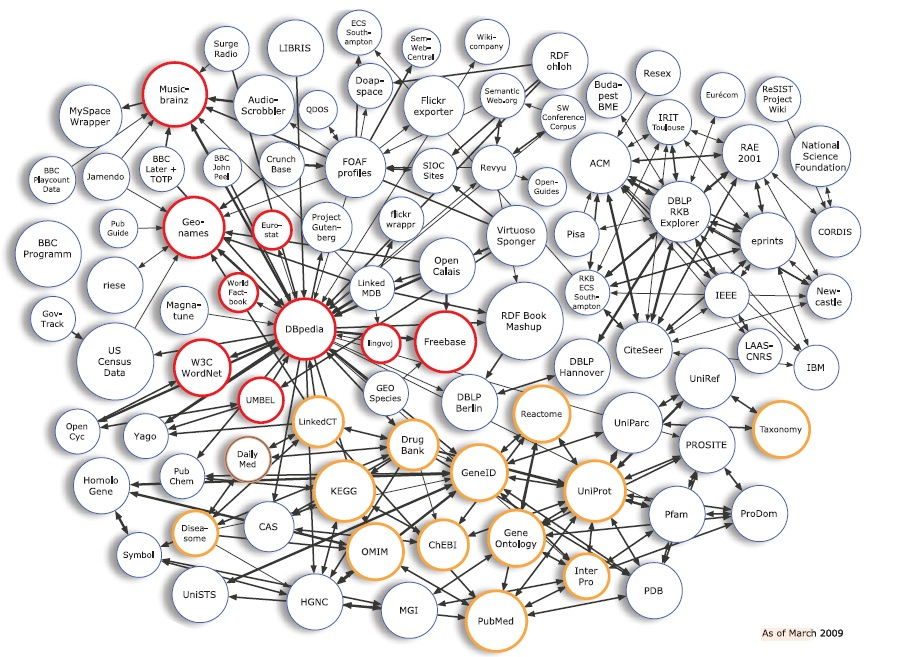
Linguistic Linked Data

Cultural Heritage Linked Data

Europeana Recognizes Importance of Semantic Technologies
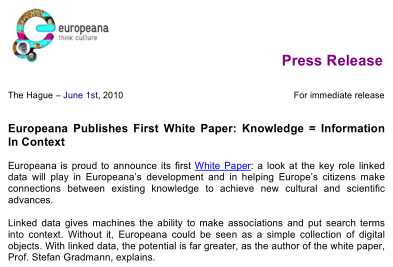
Europeana Sem Tech MindMap

Europeana Sem Tech MindMap Detail

Ontotext Corp
- World Leading semantic technology developer
- Working in this area since 2000 as part of Sirma Group
- Spun off in 2008 after venture investment (NEVEQ)
- 75 employees: Bulgaria (Sofia and Varna), UK, USA (Washington DC)
- Global leader in semantic databases, semantic annotation and search
- Proven Delivery
- Highest profile sem web applications
- BBC: World Cup 2010, London Olympics 2012, all of BBC sport…
- Dynamic Semantic Publishing: Master Publishing platform
- Semantic search for multinational pharmaceuticals (eg Astra Zeneca)
- Stable and Growing, both staff and revenue
Some Ontotext Clients

Ontotext Research Projects (FP5-FP7)
- Bulgaria's largest participant: over 30 projects
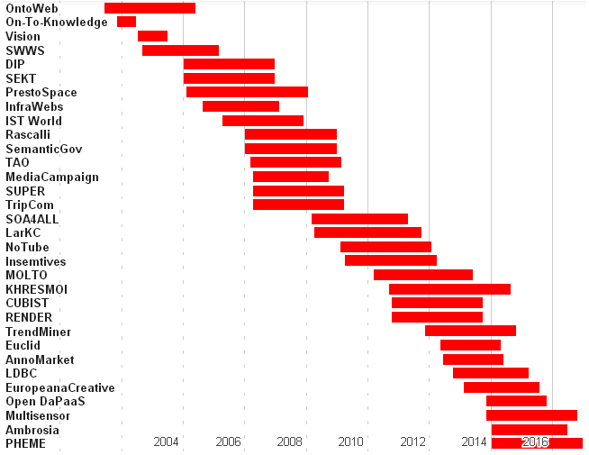
Current Research Projects
- EUCLID : Educational Curriculum for the usage of Linked Data
- Professional training curriculum for data practitioners aiming to use Linked Data in their daily work.
- Strongly relevant to CH metadata specialists and other experts focusing on Linked Open Data
- AnnoMarket : Cloud-Based Text Annotation Marketplace
- Open marketplace for pay-as-you-go, cloud-based extraction resources and services
- Multilingual semantic entity extraction from CH text (e.g. museum object descriptions) is important and largely unsolved
- LDBC : Linked Data Benchmark Council
- NPO for publishing and auditing benchmark results for graph and RDF databases.
- CH institutions that decide to use repositories require such info, and can provide meaningful use cases
Current Research Projects (2)
- Europeana Creative : Re-use of cultural heritage metadata and content by the creative industries.
- Contribution to improving the usefulness and kick-starting the professional use of Europeana data
- Ontotext plays a core technological role, helping to fulfill 3 Europeana technical KPIs
- Europeana Food and Drink : explore and celebrate European cultural identity through its culinary and social history
- Ontotext works on culinary culture classification scheme, semantic representation and storage, semantic text analysis, and semantic application
Current Research Projects (3)
- MultiSensor : Multidimensional content integration
- Mine heterogeneous content using multilingual technologies with sentiment, social and spatiotemporal competence
- Application of Linguistic Linked Data
- Relevant to text and multimedia CH content
- DaPaaS : Data Publishing through the Cloud
- Data- and Platform-as-a-Service Approach for Efficient Data Publication and Consumption
- Useful for converting and hosting your Linked Open Data, and implementing Open Data Portals
- Pheme : Computing Veracity Across Media, Languages, and Social Networks
Some Ontotext Products
- GraphDB (OWLIM)
- KIM Semantic Annotation
- Master Publishing Platform
- PROTON Ontology
GraphDB (OWLIM)
- High-performance semantic repository created by Ontotext
- Reasoning and query evaluation are performed over a persistent storage layer.
- Loading, reasoning and query evaluation are fast even against complex ontologies and huge knowledge bases
- Can manage billions of statements on desktop hardware, 10s of billions on commodity server hardware
- Pure Java implementation, ensuring ease of deployment and portability
- Compatible with Sesame (OpenRDF), which brings interoperability benefits and support for all major RDF syntaxes and query languages
- Compatible with Jena through a built in adapter layer
- Enterprise-grade
- Used by important commercial clients (see slide above)
- Found a great following in the CH domain (see later)
GraphDB Features
- High-performance reasoning: RDFS, OWL-Horst, OWL2 RL, QL
- Custom rule-sets allow tuning for optimal performance and expressivity
- Optimized owl:sameAs handling: dramatic improvements for data integrated from multiple sources
- Clustering: resilience, fail-over and scalable parallel query processing
- Geo-spatial extensions for fast geo queries over WGS84 data
- Full-text search support, based on either Lucene or proprietary search techniques
- High-performance retraction of statements & inferences
- Expressive consistency & integrity constraint checking mechanisms
- Notification mechanism, to allow clients to react to statements in the update stream
New GraphDB Features
- GraphDB-Workbench with improved management
- JMX-based management and control interfaces
- Cluster deployment and testing tool
- Cluster operational improvements
- Explain Query Plans
- Rule profiling
- Support for external plug-ins. Loaded from the classpath, handle custom functions & predicates
- Connectors that synchronize RDF data to provide extremely fast full-text and facet searches:
- Elasticsearch GraphDB Connector
- Lucene GraphDB Connector
- Solr GraphDB Connector
KIM Semantic Annotation and Search
- Built on top of GATE
- Ontotext is the largest commercial contributor to GATE
- Used by important commercial clients: BBC, UK Press Association, NDP, Oxford University Press, Financial Times, Euromoney…
Large-scale semantic annotation based on:
- Assembling a semantic knowledge base of a domain
- Creating annotation guidelines and a Gold Standard Corpus
- Machine learning
Involves:
- Named Entity Recognition
- Semantic Disambiguation
- Concept Extraction
- Relation Extraction
- Event Extraction
KIM Customization
KIM Semantic Solutions describes the various parts of KIM that can be customized
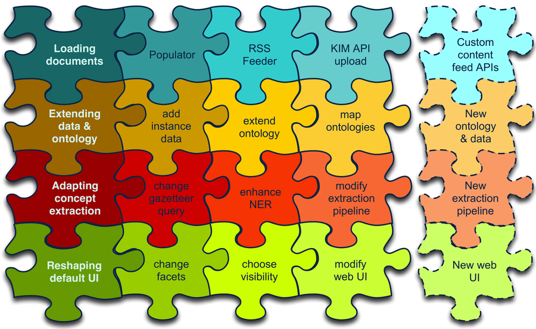
Master Publishing Framework
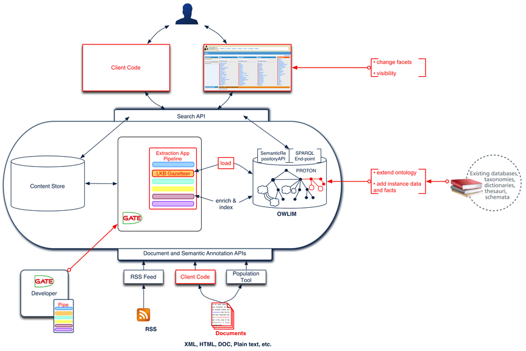
PROTON Upper Ontology
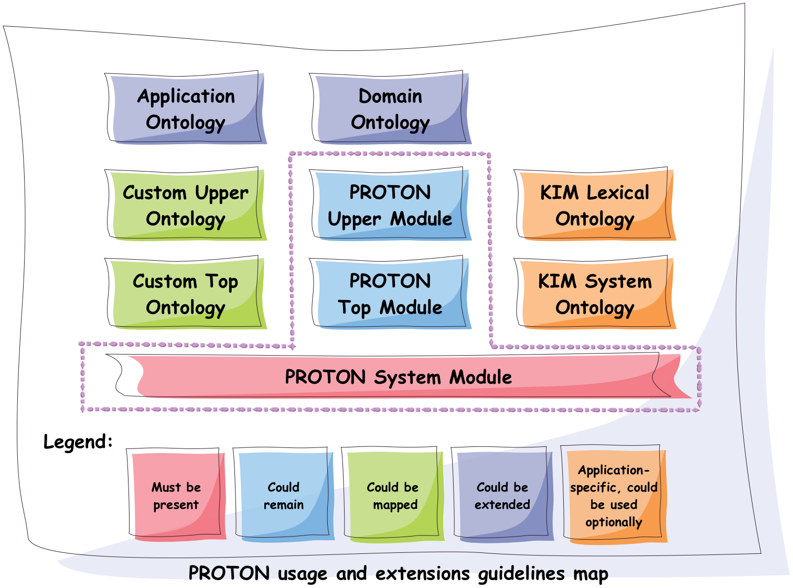
Ontotext More Info
See more info including brochures, cases etc 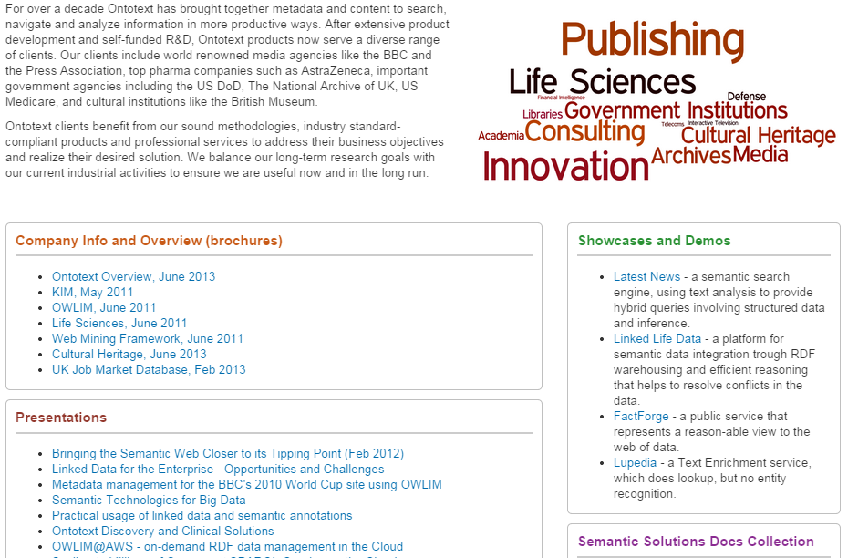
Ontotext GLAM Projects
- UK National Archives: Semantic Knowledge Base
- Europeana Creative
- Europeana Food and Drink
- Bulgariana
- GraphDB CH installations (endpoints)
- ResearchSpace
- Getty LOD
UK National Archives: Semantic Knowledge Base

Europeana Creative
- Enabling Creatives to Work with CH Data
- Pilots by eCreative partners
- Open challenges, growing to incubation support
- Help with collection data, content reuse, Europeana APIs, creative workshop ideas…

In 5 pilot areas: tourism, social networks, design, nature, history
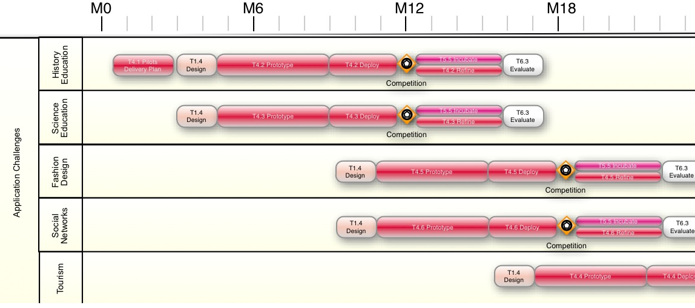
Ontotext in Europeana / Europeana Creative
Ontotext works on fundamental backend technologies important for tech KPIs

Europeana OAI and SPARQL
Ontotext creates OAI PMH server for Europeana
- So we or others can download objects in bulk
Ontotext hosts the Europeana semantic data (EDM) in OWLIM
- http://europeana.ontotext.com/sparql
20M objects, obsolete: 1.5 years old - http://europeana-test.ontotext.com/sparql
20M objects, incomplete: working with Europeana to update it - Provides SPARQL querying
SPARQL 1.1 Queries
Eg Polish Periodicals by library and decade
http://europeana-test.ontotext.com/sparql
select
?date
(sum(?n1) as ?Uniwersytetu_Warszawskiego)
(sum(?n2) as ?Politechniki_Lubelskiej)
(sum(?n3) as ?Baltycka)
{
?x dc:type 'periodical'@en.
?x ore:proxyIn/edm:dataProvider ?dataProvider.
?x dc:date ?date2.
bind (xsd:integer(concat(substr(?date2,1,3),'0')) as ?date)
bind (if(?dataProvider='e-biblioteka Uniwersytetu Warszawskiego',1,0) as ?n1)
bind (if(?dataProvider='Biblioteka Cyfrowa Politechniki Lubelskiej',1,0) as ?n2)
bind (if(?dataProvider='Bałtycka Biblioteka Cyfrowa',1,0) as ?n3)
} group by ?date order by ?date
SPARQL Analytics
Eg Polish Periodicals by library & decade (you can jsfiddle with it)

EDM Object Graph

Europeana Food and Drink
- Explore and celebrate European cultural identity through its culinary and social history
- 29 partners, of which perhaps 20 are content providers
Ontotext works on:
- culinary culture classification scheme
- semantic representation and storage
- semantic text analysis
- semantic application (pilot)
EDAMAM Recipe/Food Knowledge Base
Crawled 1.5M recipes, extracted ingredients, matched to SR23 enabling semantic search
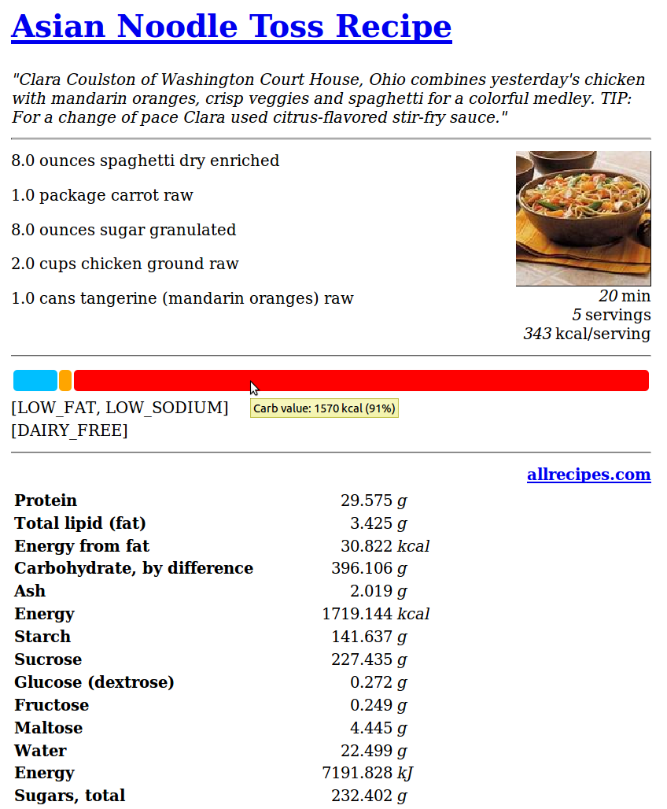
Bulgariana
A Bulgarian aggregator to Europeana

Bulgariana Collection: Thracian Gold
World-famous Bulgarian treasures:

Rhyton at Europeana
Now any European citizen can find it! 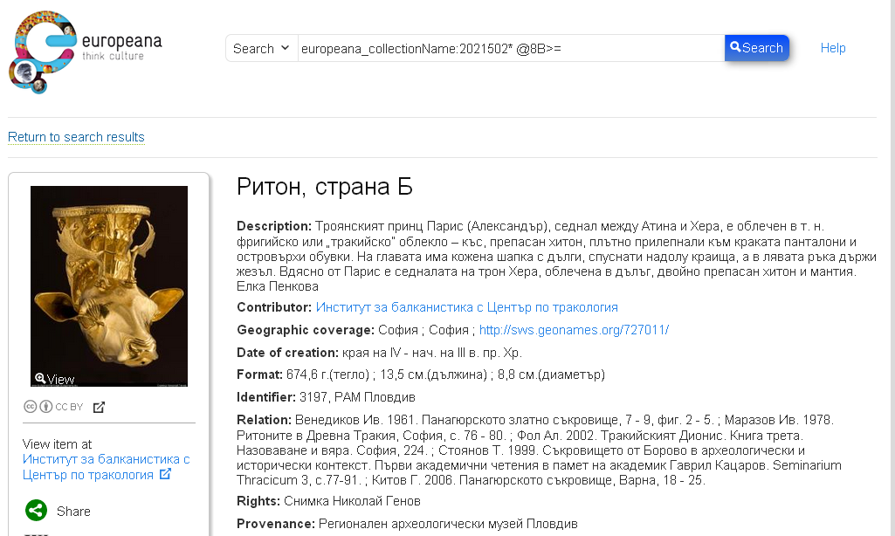
Rhyton at Europeana Open Culture
Others make beautiful apps with your data! Bulgariana Collection Featured in Open Culture
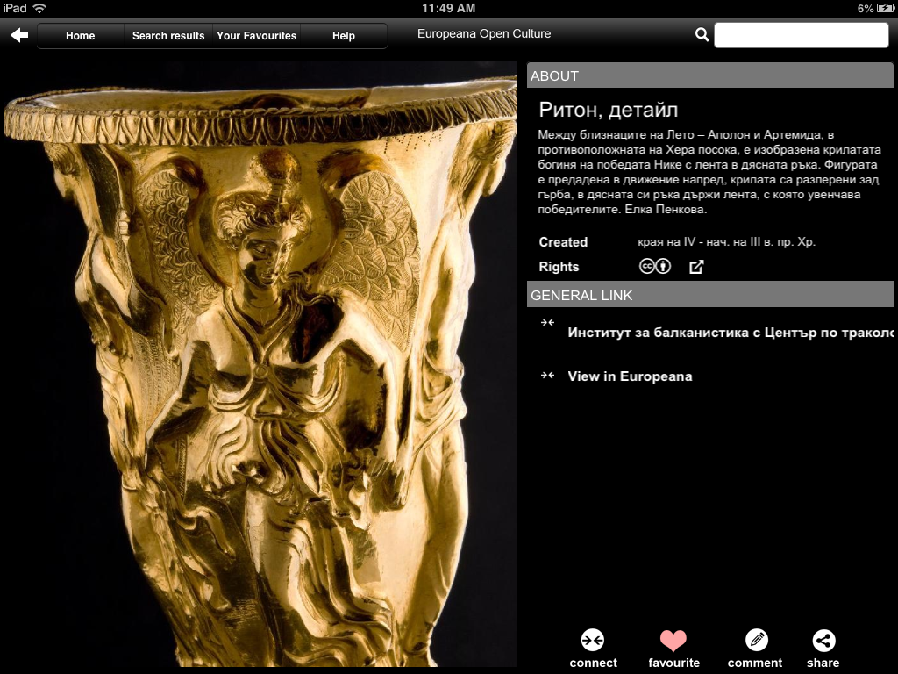
Ontotext / GraphDB in CH
Ontotext helped create some of the significant CH LOD datasets, hosted on GraphDB:
- British Museum (CRM): http://collection.britishmuseum.org/sparql
- PSNC Polish Digital Library (CRM/FRBRoo): http://dl.psnc.pl
- Europeana (EDM): http://europeana.ontotext.com
- Getty AAT & TGN (SKOS, SKOS-XL…): http://vocab.getty.edu
- JP LOD.AC: Japanese LOD initiative: http://lod.ac
- FP7 CHARISMA: art database portal: http://archives-charisma-portal.eu/
- FP7 3D COFORM: architectural and archaeological objects
- ConservationSpace: system for conservation specialists
Comparing to:
- FactForge (9 general LOD): http://www.factforge.net
- LinkedLifeData (13 bio LOD): http://linkedlifedata.com
GraphDB Repo Sizes
Millions: objects, explicit statements, ex.st per object, total statements; expansion ratio
| Repo | Ontology | Obj | Ex.st | Ex.st/obj | Tot.st | Exp. | Nodes | Density | Reasoning |
|---|---|---|---|---|---|---|---|---|---|
| BM | CRM | 2.0 | 195 | 90 | 916 | 4.7 | 54 | 17.0 | rdfs+tran+FR |
| PSNC | CRM/FRBRoo | 3.1 | 234 | 75 | 535 | 2.3 | 60 | 8.9 | rdfs-subClass |
| Europeana | EDM | 20.3 | 998 | 50 | 3798 | 3.8 | 266 | 14.3 | owl-horst |
| Getty | SKOS etc | 1.3 | 103 | 79 | 163 | 1.6 | 28 | 5.8 | owl-horst |
| FF | DC, DBP | 1673 | 3211 | 1.9 | 456 | 7.0 | owl-horst | ||
| LLD | 6706 | 10192 | 1.5 | 1554 | 6.6 | rdfs+trans |
References (Partial):
- Large-scale Reasoning with a Complex Cultural Heritage Ontology (CIDOC CRM), CRMEX 2013
- OWLIM Reasoning over FactForge, ORE 2012
- Transforming a Flat Metadata Schema to a Semantic Web Ontology: The Polish Digital Libraries Federation and CIDOC CRM Case Study. Studies in Computational Intelligence 2012
Example GraphDB use: Charisma Portal
ResearchSpace
- A Virtual Research Environment for art research
- Funded by the Andrew Mellon Foundation
- Executed by the British Museum
- Software developed by Ontotext
- Uses Ontotext's semantic database (GraphDB)
Papers:
- Types and annotations for CIDOC CRM properties, DiPP 2012
- Implementing CIDOC CRM search based on fundamental relations and OWLIM rules, SDA 2012
- Large-scale Reasoning with a Complex Cultural Heritage Ontology (CIDOC CRM), CRMEX 2013
- RDF data and image annotations in ResearchSpace, DH-CASE 2013
ResearchSpace Presentations and Videos
- ResearchSpace website
- News & Files, including presentations & papers
- Videos by Dominic Oldman (British Museum)
- Presentations by Barry Norton (BM, former Ontotext)
For example:
- Oxford Summer School slides, Jul 2014
- GLAMorous LOD and ResearchSpace introduction, Rijksmuseum, May 2014
- GLAMorous LOD, NGA, Washington DC, Apr 2014
- ResearchSpace, CIDOC CRM and Ethical data, UC London
- ResearchSpace CIDOC CRM Search System, Apr 2013
- CIDOC CRM Cultural Semantic Search using Fundamental Relationships, May 2013
- Book of the Dead Project: using CIDOC-CRM, FRBRoo and RDFa
- Querying Cultural Heritage Data
2M British Museum Objects as LOD

ResearchSpace Semantic Search
Also works across collections, eg BM and Yale Center for British Art

ResearchSpace: Semantic Data Annotation

ResearchSpace: Semantic Image Annotation
Allows arbitrary shapes using SvgEdit, supports deep zoom, relates to semantic facts, or free discussion

CRM Search (Fundamental Relations)
CRM data comprises complex graphs of nodes and properties.
- How can a user search through such complex graphs?
- The number of possible combinations is staggering
FC/FR Approach:
- New Framework for Querying Semantic Networks (FORTH TR419, 2011)
- Fundamental Categories and Relationships for intuitive querying CIDOC-CRM based repositories (FORTH TR-429, Apr 2012, 153 pages)
- "Compresses" the semantic network by mapping networks of CRM properties to single FRs
- FRs serve as a "search index" over the CRM semantic web
- Allow the user to use a simpler query vocabulary
CRM Fundamental Relations Matrix
- 114 FRs over all combinations of FCs; 18 "specialization FRs"
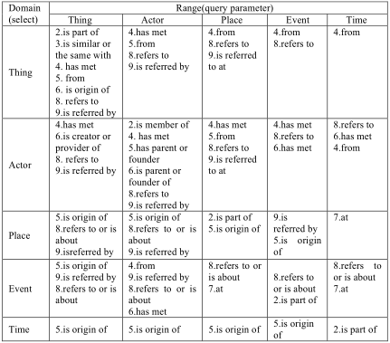
Example: Thing from Place
How a Thing's origin can be related to Place (* = recursion)
- Thing (part of another)* considered to be "from" Place if:
- is formerly or currently located at Place (falling in another)*
- or was brought into existence (produced/created) by an Event (part of another)*
- that happened at Place (falling in another)*
- or was carried out by an Actor (who is member of a Group)*
- who formerly or currently has residence at Place (falling in another)*
- or was brought into existence (born/formed) by an Event (part of another)* that happened at Place (falling in another)*
- or was Moved to/from a Place (falling in another)*
- or changed ownership through an Acquisition (part of another)*
- that happened at Place (falling in another)*
Thing from Place: Definition (CRM Classes & Properties)
FC70_Thing --(P46i_forms_part_of* | P106i_forms_part_of* | P148i_is_component_of*)-> FC70_Thing:
{FC70_Thing --(P53_has_former_or_current_location | P54_has_current_permanent_location)-> E53_Place:
{E53_Place --P89_falls_within*-> E53_Place}
OR FC70_Thing --P92i_was_brought_into_existence_by-> E63_Beginning_of_Existence:
{E63_Beginning_of_Existence --P9i_forms_part_of*-> E5_Event:
{E5_Event --P7_took_place_at-> E53_Place:
{E53_Place --P89_falls_within*-> E53_Place}
OR E7_Activity --P14_carried_out_by-> E39_Actor:
{E39_Actor --P107i_is_current_or_former_member_of* -> E39_Actor:
{E39_Actor --P74_has_current_or_former_residence -> E53_Place:
{E53_Place --P89_falls_within*-> E53_Place}
OR E39_Actor --P92i_was_brought_into_existence_by-> E63_Beginning_of_Existence:
{E63_Beginning_of_Existence --P9i_forms_part_of*-> E5_Event:
{E5_Event --P7_took_place_at-> E53_Place:
{E53_Place --P89_falls_within* -> E53_Place}}}}}}}
OR E19_Physical_Thing --P25i_moved_by-> E9_Move:
{E9_Move --(P26_moved_to | P27_moved_from)-> E53_Place:
{E53_Place --P89_falls_within*-> E53_Place}}
OR E19_Physical_Object --P24i_changed_ownership_through-> E8_Acquisition:
{E8_Acquisition --P9i_forms_part_of*-> E5_Event:
{E5_Event --P7_took_place_at-> E53_Place:
{E53_Place --P89_falls_within*-> E53_Place}}}}
Thing from Place: Graphical Representation
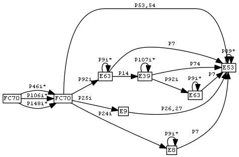
Thing from Place: SPARQL Query
select ?t ?p2 {
?t a FC70_Thing. ?t (P46i_forms_part_of* | P106i_forms_part_of* | P148i_is_component_of*) ?t1.
{?t1 (P53_has_former_or_current_location | P54_has_current_permanent_location) ?p1}
UNION
{?t1 P92i_was_brought_into_existence_by ?e1. ?e1 P9i_forms_part_of* ?e2.
{?e2 P7_took_place_at ?p1}
UNION
{?e2 P14_carried_out_by ?a1.
?a1 P107i_is_current_or_former_member_of* ?a2.
{?a2 P74_has_current_or_former_residence ?p1}
UNION
{?a2 P92i_was_brought_into_existence_by ?e3. ?e3 P9i_forms_part_of* ?e4.
?e4 P7_took_place_at ?p1}}}
UNION
{?t2 P25i_moved_by ?e5. ?e5 (P26_moved_to | P27_moved_from) ?p1}
UNION
{?t2 P24i_changed_ownership_through ?e6.
?e6 P9i_forms_part_of ?e7. ?e7 P7_took_place_at ?p1}.
?p1 P89_falls_within* ?p2}
- Very complex and expensive, especially when you need to combine with other FRs into composite queries
- Tried in 3D COFORM, just doesn't work
Thing from Place: Corrected/Rationalized Definition
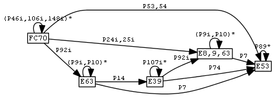
Thing from Place: Decomposing into sub-FRs
- "Sub-FRs" are auxiliary relations used to build up the final FR
- The numbering comes from CRM property and entity names
- Prefixes: FR: final result, FRT: transitive, FRX: non-transitive, FC70=Thing or E: from/to that class
# self-loops and simple disjunctions
FRT_46i_106i_148i := (P46i|P106i|P148i)+
FRT_9i_10 := (P9|P10)+
FRT_107i := P107i+
FRT_89 := P89+
FRX_53_54 := (P53|P54)
FRX_24i_25i := (P24i|P25i)
# growing fragments
FRX_92i := P92i | P92i/FRT_9i_10
FRX_92i_14 := FRX_92i/P14 | FRX_92i/P14/FRT_107i
FRX_FC70_E8_9_63 := FRX_92i_14/P92i | FRX_24i_25i
FRX_FC70_E8_9_63_P7 := FRX_FC70_E8_9_63/P7 | FRX_FC70_E8_9_63/FRT_9i_10/P7
FRX7 := FRX_53_54 | FRX_FC70_E8_9_63_P7 | FRX_92i_14/P74 | FRX_92i/P7
FRX7_P89 := FRX7 | FRX7/FRT_89
FR7 := FRX7_P89 | FRT_46i_106i_148i/FRX7_P89
FR Implementation as OWLIM Rules
- OWL2 doesn't have conjunctive properties
- So we implemented with OWLIM rules, using the parallel/sequential decompositions above
- Details: FR Implementation
- Implemented 19 FRs of Thing (see FR Names):
- refers to or is about Place; from Place; is/was located in Place
- has met Actor; by Actor
- refers to or is about Event; has met Event
- is made of Material; is/has Type; used technique; identified by Identifier
- Use 44 CRM properties. Took 86 rules, 10 axioms, 26 sub-FRs (gray on next slide)
- Refactoring idea: http://vladimiralexiev.github.io/pres/extending-owl2/index.html
FR Dependency Diagram
Used to check no disconnected props, no misspelling in rules
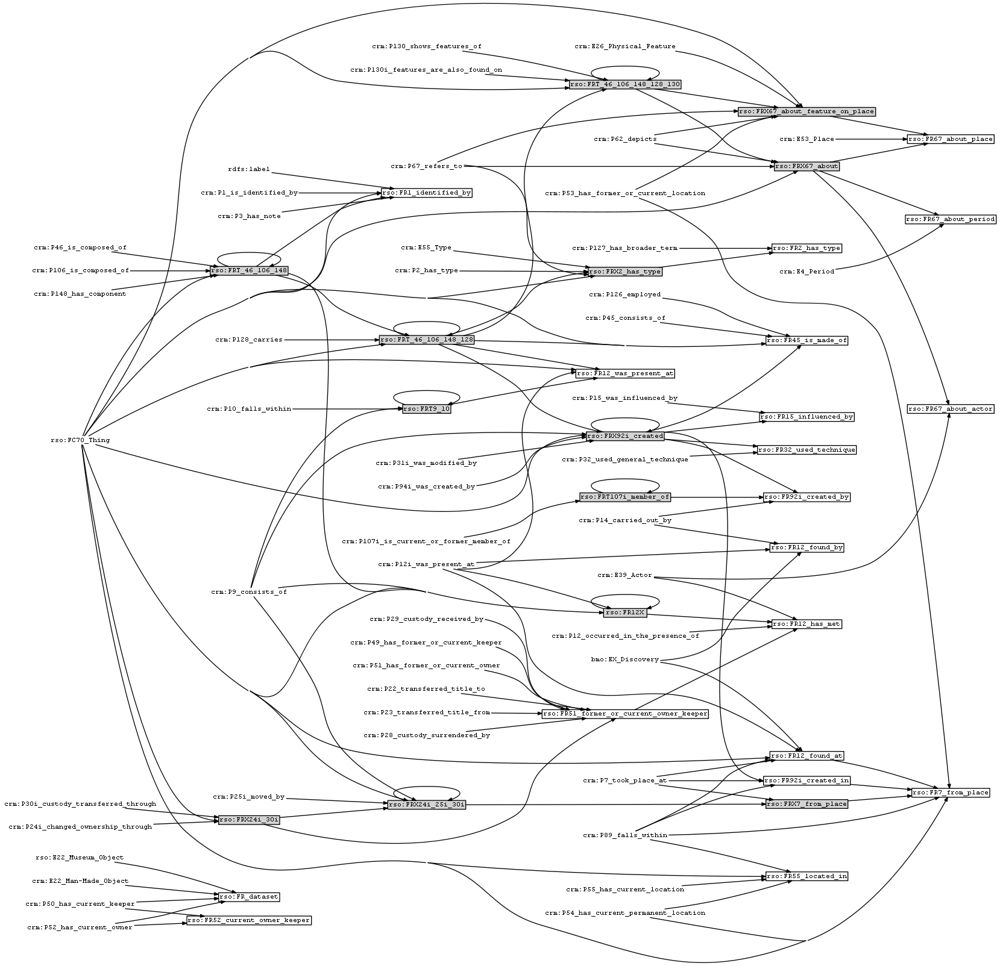
Getty Vocabularies LOD
Well-known and important cultural heritage thesauri:
- Art and Architecture Thesaurus (AAT)
- Thesaurus of Geographic Names (TGN)
- Unified List of Artist Names (ULAN)
- Cultural Object Names Authority (CONA)
Ontotext helps Getty publish them as LOD: http://vocab.getty.edu
- AAT published Feb 2014, already sees numerous use cases
- TGN published Aug 2014
- Continuing with ULAN, CONA; AATA (bibliography), Getty Museum data
- Special session at CIDOC Congress (Dresden, Sep 2014)
Getty External Ontologies
- SKOS, SKOSXL, ISO 25964 for representing thesaurus info;
- DC, DCT for common properties;
- BIBO, FOAF for sources and contributors;
- WGS, Schema for geographic information;
- PROV for revision history;
- RDF, RDFS, OWL, XSD for system properties;
- R2RML for implementing the conversion.
Getty Semantic Representation
- Covers subjects (concepts, guide terms…), hierarchical rels, associative rels, historic info, labels, sources, contributors, revision history, languages …
- Doc (100 pages!): below is Semantic Overview
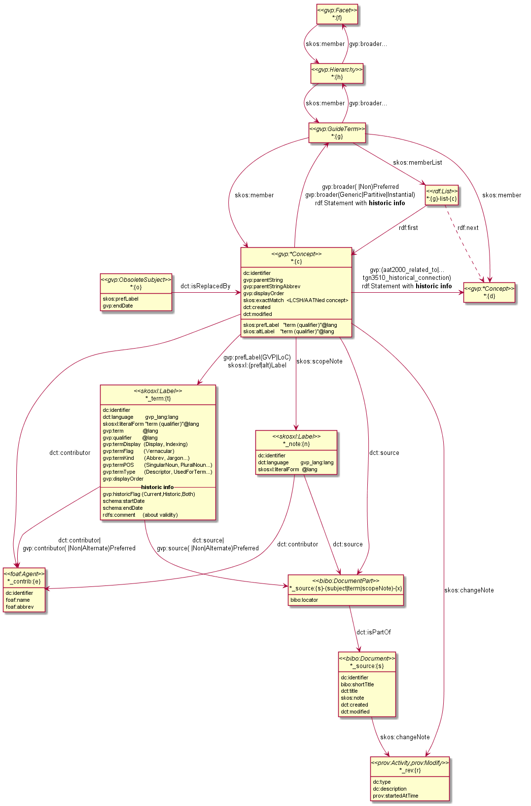
TGN Semantic Representation
Duality Concept-Place (ala VIAF, UK BL, FR BnF, SE KB..)

GVP Ontology
Custom ontology: http://vocab.getty.edu/ontology

Use of ISO 25946 in Getty LOD
Latest standard on thesauri: ISO 25946. Use Thesaurus Array for ordered children

Contribution to ISO 25946
- Contributed to ISO 25946 ontology: http://purl.org/iso25964/skos-thes
- See Linked Open Vocabularies entry
- First industrial use of ISO 25946
- Defined appropriate combinations of BTG, BTP, BTI relations (first formally defined in ISO).
On Compositionality of ISO 25964 Hierarchical Relations (BTG, BTP, BTI), V.Alexiev, J.Lindenthal, A.Isaac. Networked Knowledge Organization Systems (NKOS 2014) Workshop at DL2014, London, 11-12 Sep 2014
GVP LOD Architecture
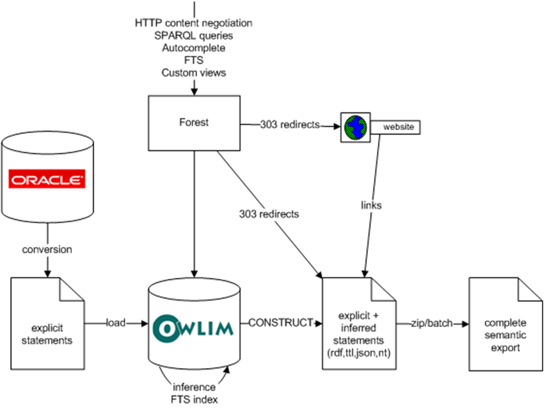
TGN Charting with SPARQL
Number of members of the UN per year. See doc or jsfiddle with it
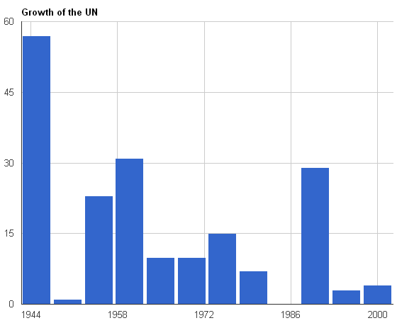
Possible Future Topics
- Deploying thesaurus management system (VocBench) based on SKOS, SKOS-XL and semantic repository
- Text analytics and semantic annotation of CH records
- Linguistic Linked Data
- Manuscripts: semantic integration, semantic search, semantic annotation
- Research Infrastructures